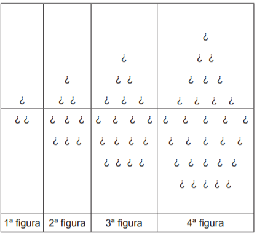
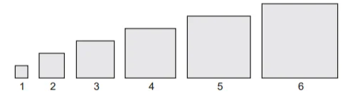
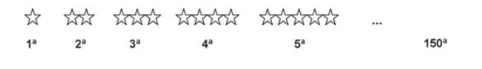
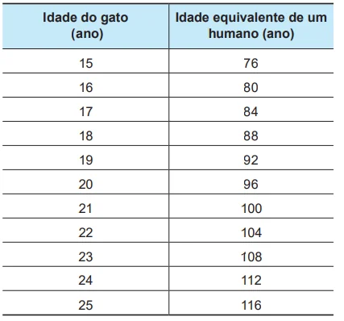

Com o objetivo de trabalhar a concentração e a sincronia de movimentos dos alunos de uma de suas turmas, um professor de educação física dividiu essa turma em três grupos (A, B e C) e estipulou a seguinte atividade: os alunos do grupo A deveriam bater palmas a cada 2 s, os alunos do grupo B deveriam bater palmas a cada 3 s e os alunos do grupo C deveriam bater palmas a cada 4 s.
O professor zerou o cronômetro e os três grupos começaram a bater palmas quando ele registrou 1 s. Os movimentos prosseguiram até o cronômetro registrar 60 s.
Um estagiário anotou no papel a sequência formada pelos instantes em que os três grupos bateram palmas simultaneamente.
Qual é o termo geral da sequência anotada?
Exercício 2
Uma fábrica de brinquedos educativos vende uma caixa com fichas pretas e fichas brancas para compor sequências de figuras seguindo padrões. Na caixa, a orientação para representar as primeiras figuras da sequência de barcos é acompanhada deste desenho:

Qual é o total de fichas necessárias para formar a 15ª figura da sequência?
Exercício 3
Em um trabalho escolar, João foi convidado a calcular as áreas de vários quadrados diferentes, dispostos na sequência, da esquerda para a direita, como mostra a figura.

O primeiro quadrado da sequência tem lado medindo 1 cm, o segundo quadrado tem lado medindo 2 cm, o terceiro quadrado tem lado medindo 3 cm e assim por diante. O objetivo do trabalho é identificar em quanto a área de cada quadrado da sequência excede a área do quadrado anterior. A área do quadrado que ocupa a posição n, na sequência foi representada por An.
Exercício 4
O trabalho em empresas de festas exige dos profissionais conhecimentos de diferentes áreas. Na semana passada, todos os funcionários de uma dessas empresas estavam envolvidos na tarefa de determinar a quantidade de estrelas que seriam utilizadas na confecção de um painel de Natal. Um dos funcionários apresentou um esboço das primeiras cinco linhas do painel, que terá, no total, 150 linhas.

Após avaliar o esboço, cada um dos funcionários esboçou sua resposta: FUNCIONÁRIO I: aproximadamente 200 estrelas. FUNCIONÁRIO II: aproximadamente 6 000 estrelas. FUNCIONÁRIO III: aproximadamente 12 000 estrelas. FUNCIONÁRIO IV: aproximadamente 22 500 estrelas. Qual funcionário apresentou um resultado mais próximo da quantidade de estrelas necessária?
Exercício 5
É comum pensarmos na equivalência entre a idade de um animal de estimação, no caso de cães e gatos, e de um ser humano.
De acordo com as diretrizes de idade criadas pela American Animal Hospital Association (AAHA), o International Cat Care e a American Association of Feline Practitioners (AAFP), a última fase da vida de um gato é chamada de geriátrica e começa aos 15 anos de vida do animal. A tabela apresenta os primeiros anos da fase geriátrica da equivalência entre a idade do gato e a idade de um humano.

Sabe-se que o gato mais velho do mundo morreu ao completar 38 anos de vida. Considere que o padrão observado na tabela se mantém.
De acordo com os dados apresentados, a idade em que o gato mais velho do mundo morreu é equivalente a qual idade, em ano, de um humano?